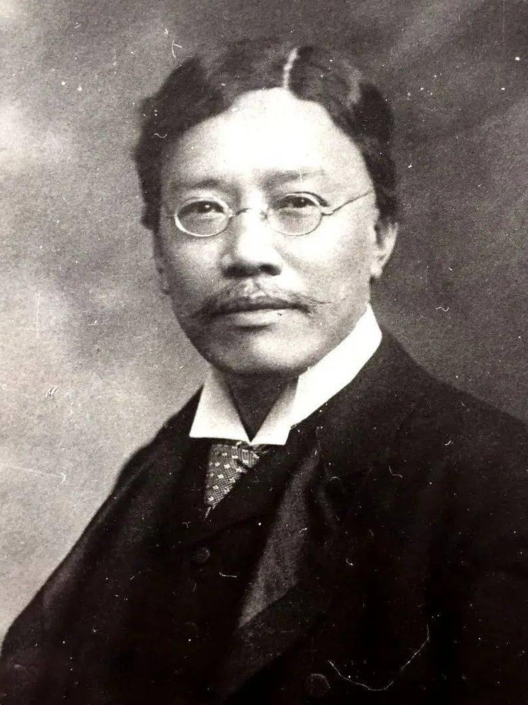

问题
先从一个真实研究问题出发，而不是先从工具功能出发。ScholarOS 关心的是研究如何保持可解释。
社会科学研究 / 项目说明
AI时代社会科学研究的过程治理与训练基础设施
“学术则黜伪而崇真，于刑政则屈私以为公。”

What
ScholarOS 不是先从“做一个更聪明的 AI 工具”出发，而是先从一个更熟悉的学术问题出发：在 AI 深度介入研究之后，研究过程怎样才不会失踪。它要做的是把研究任务、研究过程与研究产物重新接回同一条可复核路径。
先从一个真实研究问题出发，而不是先从工具功能出发。ScholarOS 关心的是研究如何保持可解释。
AI 让脚本、图表与文字改得更快，也让研究过程更容易失踪。ScholarOS 处理的是这个风险。
代码、数据、图表、文本和结论都应当能回到来源。最终文本不该与生成过程脱节。
Why
AI 让社会科学研究进入了一个新的速度条件。脚本、回归、图表和文字都可以更快改写，但问题、过程、版本、产物和最后论证之间的关系，也更容易断开。ScholarOS 关心的正是这种断开对研究可信度、研究训练与方法规范造成的影响。
过程可见性：研究者是否还能解释自己在做什么，为什么这样做，以及哪些判断属于事前设定。
来源说明：论文中的表格、图像和结论，是否能够说明脚本、数据版本与修改路径。
研究训练：学生、合作者和未来的自己，是否还能从结果回到过程，而不是只看到最后的定稿。
How
第一层先说明学术问题，第二层才说明承接机制。ScholarOS 是 `Scholar Operating System` 的缩写，但它首先对外呈现为一种研究过程治理与训练基础设施。技术机制服务于这个目标，而不是反过来让读者先适应技术词汇。
提出研究问题
限定任务边界
连接来源与修改
从结果回到过程
先从一个真实研究者如何组织 AI 时代研究工作出发，再把这套过程逐步开放为公共对象。
在关键节点保护任务边界、修改关系和产物来源，避免研究过程只剩下事后补写的结果说明。
让学生、合作者和未来的自己能够从最终结果回到中间判断，而不只看到技术残骸。
只有到了这里，才需要 GitHub、hooks、skills 和脚本来承担那条记录链的具体机制。